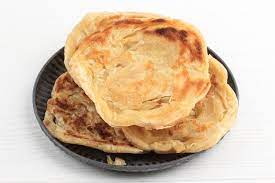
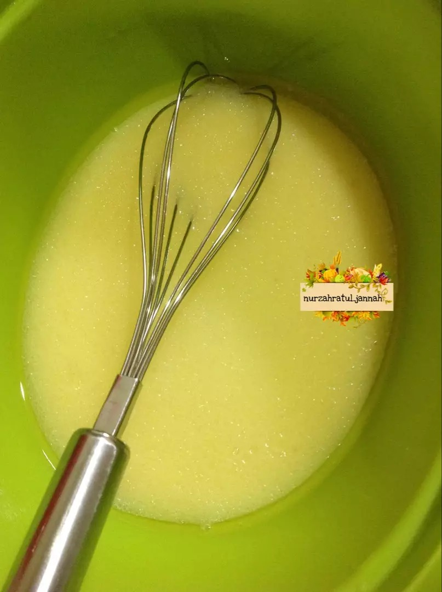
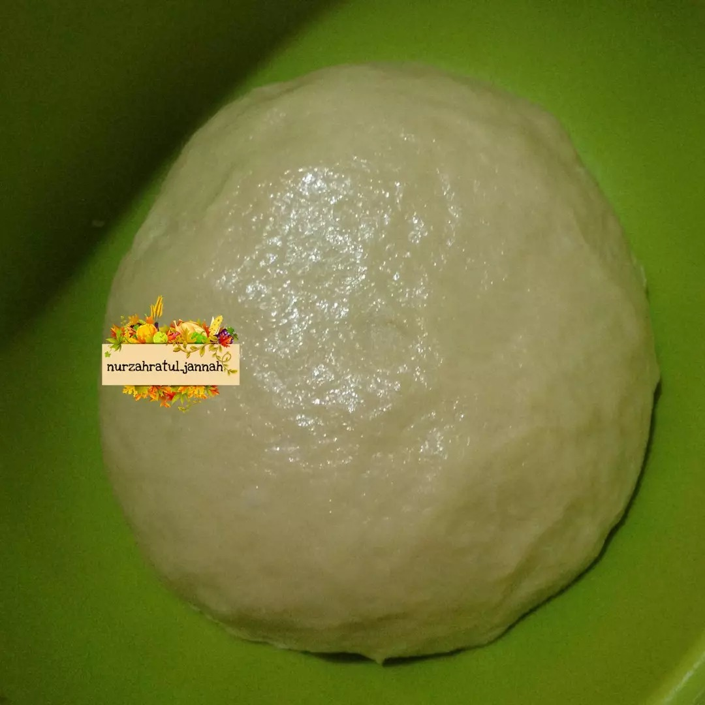
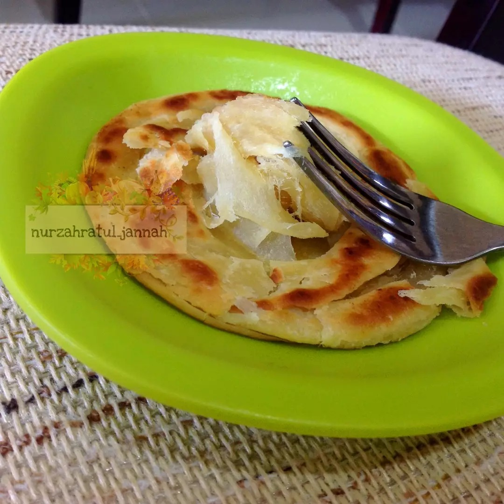
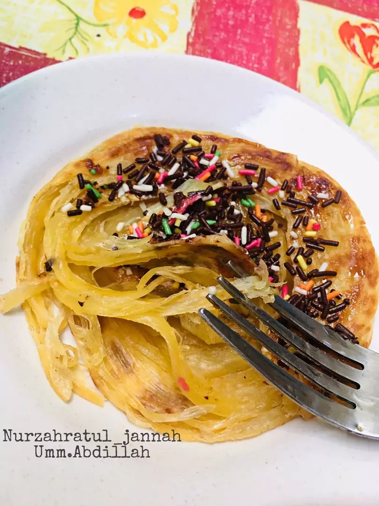

Resep kue maryam

Bahan-Bahan
- 500 gr tepung terigu prot sedang / prot tinggi
- 1 butir telur utuh dan 1 kuning telur
- 2 sdm susu bubuk / susu kental manis
- 1/2 sdt garam
- 84 ml minyak goreng
- 225 ml air hangat
- Margarin secukupnya (hanya untuk olesan)
- Keju, susu kental manis, meses/coklat leleh
- Semangkuk kecil gulai / kuahnya saja
Langkah-langkah
- Siapkan wadah, campur air, minyak goreng dan telur, aduk hingga rata menggunakan wisk atau garpu

- Masukkan tepung terigu, susu, dan garam, uleni sampai kalis

- Bagi adonan sama rata, bentuk bulat-bulat, olesi margarin diseluruh bagian sampai rata (boleh pakai margari cair/minyak goreng). Setelah itu tutup dengan plastik dan lap basah, diamkan selama 1 jam

- Ambil satu adonan, pipihkan hingga tipis olesi dengan margarin secara merata

- Lalu gulung perlahan sampai bentuk memanjang dan sedikit ditarik agar lebih panjang. Kemudian gulung melingkar dengan arah berlawanan jadi seperti huruf 'S'[2]. ketika sudah bertemu ditengah, lalu tumpuk Jadi satu

- Panaskan teflon, ambil adonan yang sudah di tumpuk jadi satu kedalam teflon, langsung pipihkan dengan cara ditekan memutar menggunakan serokan penggorengan

- Jika semua sisi sudah berwarna kuning kecoklatan, angkat dan lakukan kembali pada adonan berikutnya hingga habis

- Apabila sudah matang semua, sajikan dengan topping sesuai selera..roti ini enak juga dimakan bersama semangkuk gulai untuk pengganti nasi
